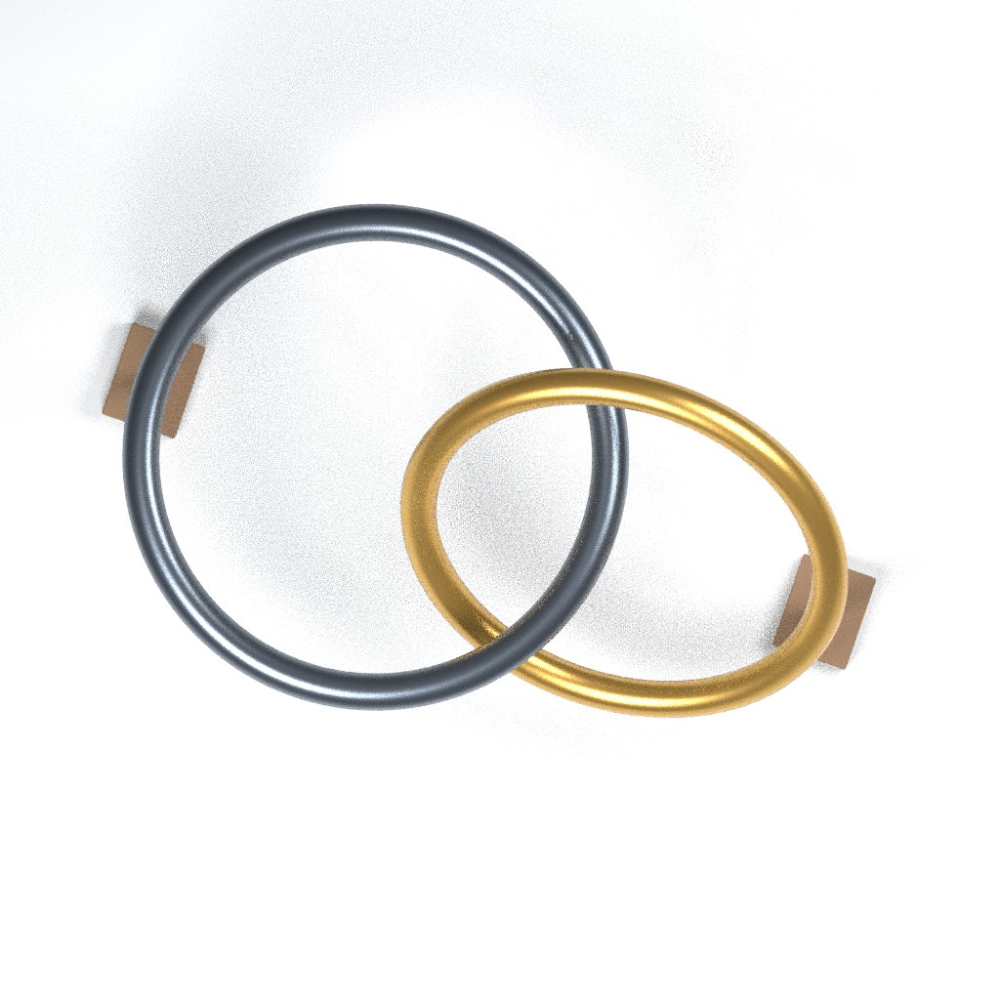
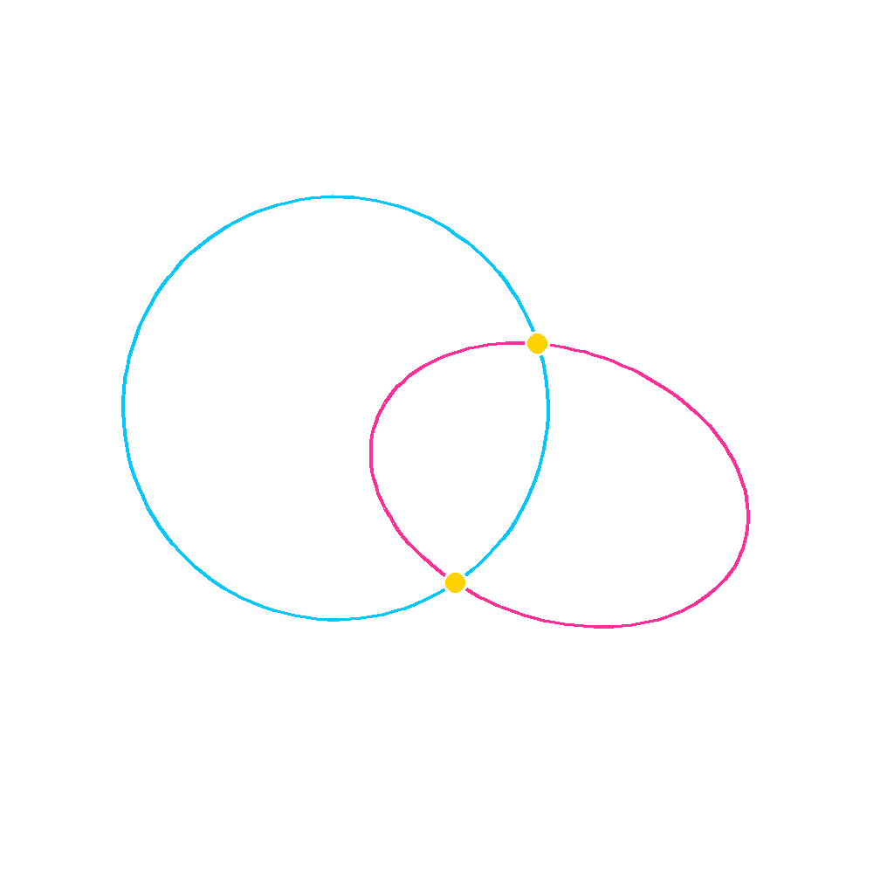
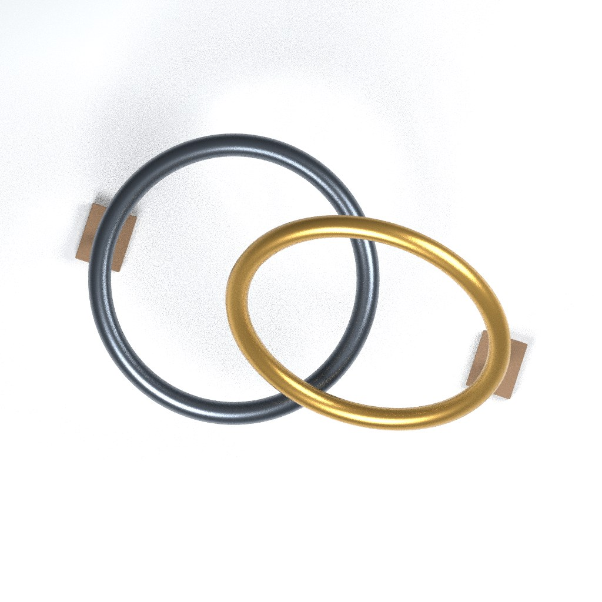
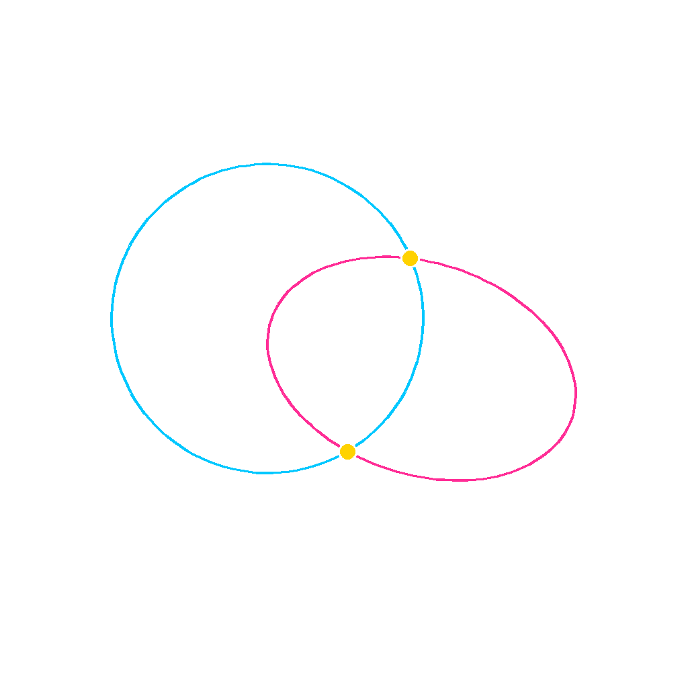
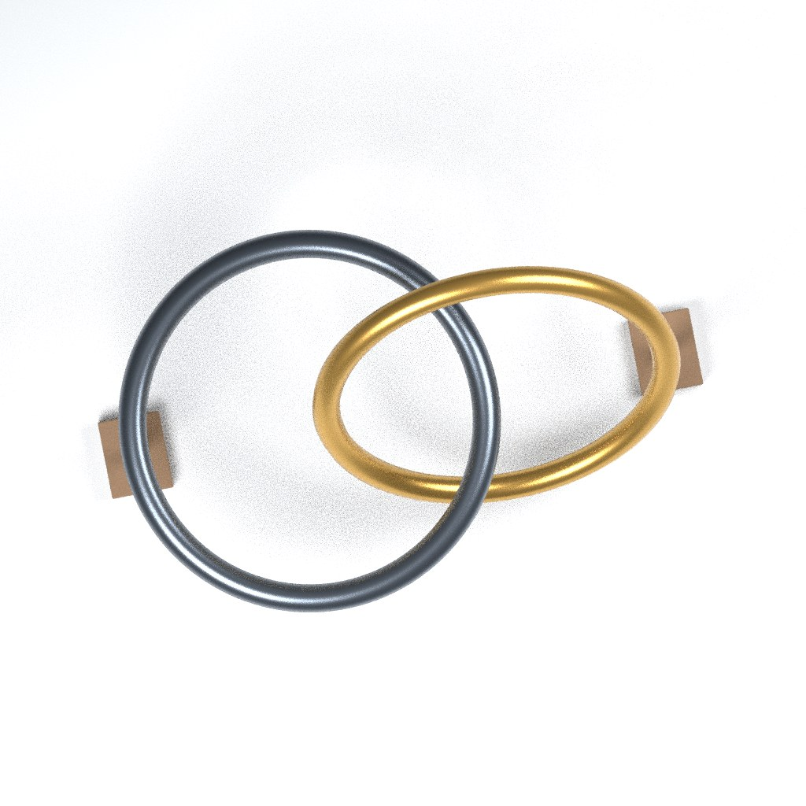
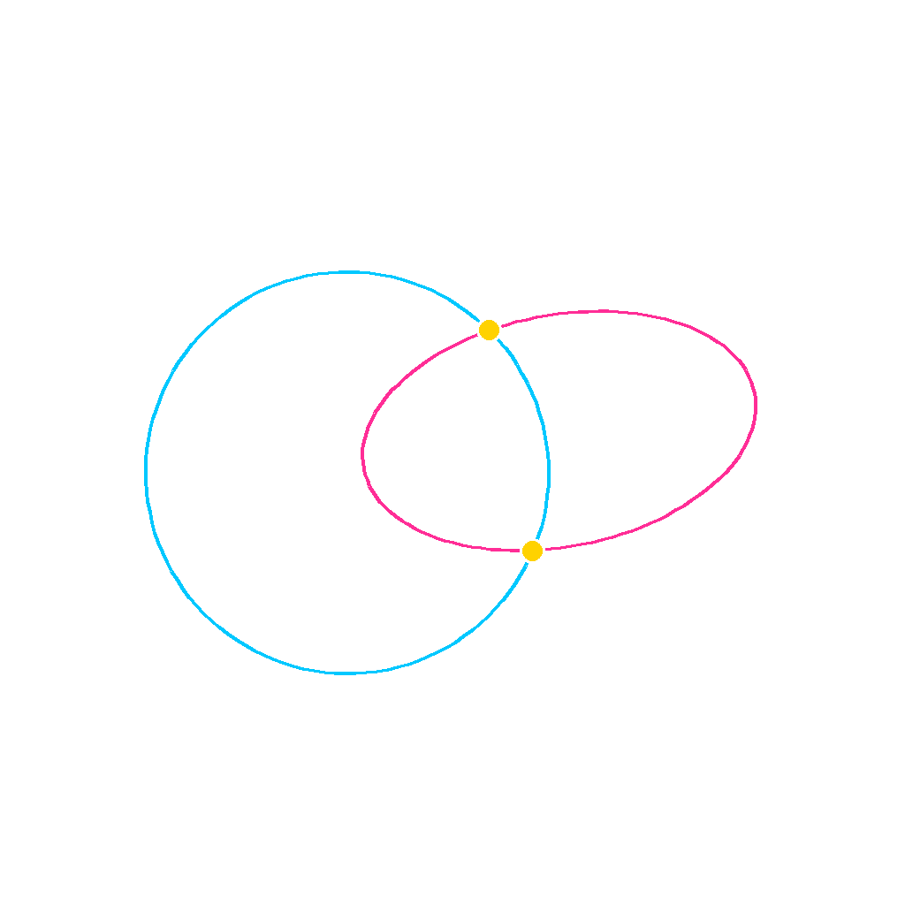

1 · 3D spatial relationships
Are the two closed metal rings linked together?


Answer from both programs: yes
- Crossing 1: the brass ring is on top.
- Crossing 2: the steel ring is on top.
- Different rings on top at the two crossings: linked.


Answer from both programs: no
- Crossing 1: the brass ring is on top.
- Crossing 2: the brass ring is on top.
- The same ring on top at both crossings: not linked.


Answer from both programs: yes
- Crossing 1: the brass ring is on top.
- Crossing 2: the steel ring is on top.
- Different rings on top at the two crossings: linked.
Watch the inverse program work, step by step
Inverse program as generated (81 lines)
import math
import numpy as np
import cv2
def _ellipse(mask):
n, labels, stats, _ = cv2.connectedComponentsWithStats(mask.astype(np.uint8),8)
if n < 2:
raise ValueError('No ring material recovered')
keep=[max(range(1,n),key=lambda i: stats[i,cv2.CC_STAT_AREA])]
clean=np.isin(labels,keep)
y,x=np.where(clean)
if len(x)<500:
raise ValueError('Insufficient exposed ring surface')
pts=np.column_stack([x,y]).astype(np.float32)
fit=cv2.fitEllipse(pts.reshape(-1,1,2))
# Robustly trim feet and specular stray pixels using radial residual.
for _ in range(3):
c,axes,ang=fit
u=pts-np.array(c)
t=math.radians(ang); co=math.cos(t); si=math.sin(t)
xx=u[:,0]*co+u[:,1]*si
yy=-u[:,0]*si+u[:,1]*co
rr=np.sqrt((xx/(axes[0]/2))**2+(yy/(axes[1]/2))**2)
trimmed=pts[np.abs(rr-1)<0.15]
if len(trimmed)<500: raise ValueError('Incomplete ellipse')
fit=cv2.fitEllipse(trimmed.reshape(-1,1,2))
return fit
def _point(e,t):
c,a,ang=e
co=math.cos(math.radians(ang)); si=math.sin(math.radians(ang))
x=a[0]/2*math.cos(t); y=a[1]/2*math.sin(t)
return np.array([c[0]+co*x-si*y,c[1]+si*x+co*y])
def _implicit(e,p):
c,a,ang=e
u=p-np.array(c); co=math.cos(math.radians(ang)); si=math.sin(math.radians(ang))
return ((u[0]*co+u[1]*si)/(a[0]/2))**2+((-u[0]*si+u[1]*co)/(a[1]/2))**2-1
def measure(image):
rgb=np.asarray(image.convert('RGB')).astype(np.float32)
r,g,b=rgb[:,:,0],rgb[:,:,1],rgb[:,:,2]
steel=(b>r*1.075)&(b>g*1.015)&(r<180)&(b<220)
brass=(r>g*1.14)&(g>b*1.20)&(r>55)
e1=_ellipse(steel); e2=_ellipse(brass)
crossings=[]
for i in range(720):
lo=2*math.pi*i/720; hi=2*math.pi*(i+1)/720
fl=_implicit(e2,_point(e1,lo)); fh=_implicit(e2,_point(e1,hi))
if fl*fh>=0: continue
for _ in range(20):
mid=(lo+hi)/2; fm=_implicit(e2,_point(e1,mid))
if fl*fm<=0: hi=mid
else: lo=mid; fl=fm
p=_point(e1,(lo+hi)/2)
x,y=[int(round(v)) for v in p]
st=int(steel[y-4:y+5,x-4:x+5].sum())
br=int(brass[y-4:y+5,x-4:x+5].sum())
if max(st,br)<30 or abs(st-br)<25:
raise ValueError('Crossing order not clearly observable')
crossings.append({'xy':p.tolist(),'steel_pixels':st,'brass_pixels':br,'over':'steel' if st>br else 'brass'})
if len(crossings)!=2:
raise ValueError('Supported scope requires two transverse projected crossings')
linked=crossings[0]['over']!=crossings[1]['over']
return {'ellipses':[{'center':list(e[0]),'axes':list(e[1]),'angle':e[2]} for e in (e1,e2)],
'crossings':crossings,'trace':'Opposite crossing orders imply interlock of two simple closed rings; equal orders imply separation.',
'decision':'linked' if linked else 'separate','answer':'yes' if linked else 'no'}
def answer_from_image(image,question,choices):
result=measure(image)['answer']
if result not in choices: raise ValueError('Missing public answer choice')
return result
def explain_from_image(image,question,choices):
return measure(image)